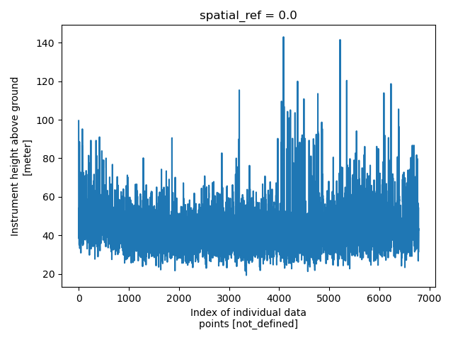
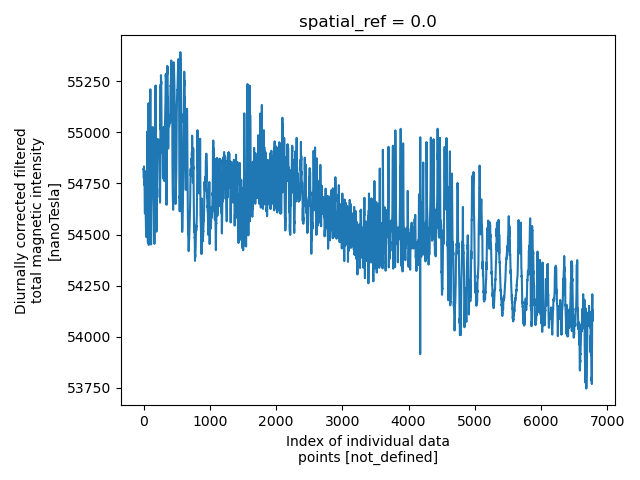
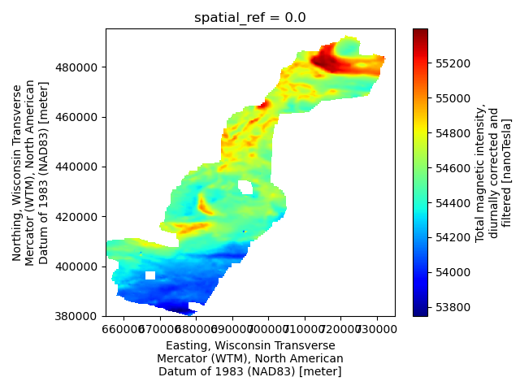

Note
Go to the end to download the full example code.
Magnetic Survey
These magnetic data channels were pulled from the Wisconsin Skytem example in this repository
Dataset Reference: Minsley, B.J, Bloss, B.R., Hart, D.J., Fitzpatrick, W., Muldoon, M.A., Stewart, E.K., Hunt, R.J., James, S.R., Foks, N.L., and Komiskey, M.J., 2022, Airborne electromagnetic and magnetic survey data, northeast Wisconsin (ver. 1.1, June 2022): U.S. Geological Survey data release, https://doi.org/10.5066/P93SY9LI.
import matplotlib.pyplot as plt
from os.path import join
import numpy as np
import gspy
from gspy import Survey
import xarray as xr
from pprint import pprint
Convert the magnetic csv data to NetCDF
Initialize the Survey
# Path to example files
data_path = '..//data_files//magnetics'
# Survey metadata file
metadata = join(data_path, "WI_Magnetics_survey_md.yml")
# Establish the Survey
survey = Survey.from_dict(metadata)
data_container = survey.gs.add_container('data', **dict(content = "raw and gridded data",
comment = "This is a test"))
1 - Raw Data - Import raw mag data from CSV-format. Define input data file and associated metadata file
d_data1 = join(data_path, 'WI_Magnetics.csv')
d_supp1 = join(data_path, 'WI_Magnetics_raw_data_md.yml')
# Add the raw AEM data as a tabular dataset
data_container.gs.add(key='raw_data', data_filename=d_data1, metadata_file=d_supp1, sep=r'[\s,]+', engine='python')
1 - Gridded Data - Import a tif of gridded mag data.
d_supp1 = join(data_path, 'WI_Magnetics_grids_md.yml')
# Add the raw AEM data as a tabular dataset
data_container.gs.add(key='grids', metadata_file=d_supp1)
Save to NetCDF file
d_out = join(data_path, 'magnetics.nc')
survey.gs.to_netcdf(d_out)
Reading back in
new_survey = gspy.open_datatree(d_out)['survey']
print(new_survey)
<xarray.DataTree 'survey'>
Group: /survey
│ Dimensions: ()
│ Coordinates:
│ spatial_ref float64 8B ...
│ Data variables:
│ survey_information float64 8B ...
│ flightline_information float64 8B ...
│ survey_equipment float64 8B ...
│ Attributes:
│ title: Magnetic data from SkyTEM Airborne Electromagnetic (AEM) Su...
│ institution: USGS Geology, Geophysics, and Geochemistry Science Center
│ source: SkyTEM raw data, USGS processed data
│ history: (1) Data acquisition 01/2021 - 02/2021 by SkyTEM Canada Inc...
│ references: Minsley, Burke J., B.R. Bloss, D.J. Hart, W. Fitzpatrick, M...
│ comment: This dataset includes minimally processed (raw) AEM and raw...
│ summary: Magnetic survey data were collected during January and Febr...
│ content: Data
│ created_by: gspy==2.0.0
│ conventions: CF-1.8, GS-2.0
│ type: survey
└── Group: /survey/data
│ Dimensions: ()
│ Data variables:
│ spatial_ref float64 8B ...
│ Attributes:
│ content: raw and gridded data
│ comment: This is a test
│ type: container
├── Group: /survey/data/raw_data
│ │ Dimensions: (index: 6785)
│ │ Coordinates:
│ │ spatial_ref float64 8B ...
│ │ * index (index) int32 27kB 0 1 2 3 4 5 ... 6780 6781 6782 6783 6784
│ │ x (index) float64 54kB ...
│ │ y (index) float64 54kB ...
│ │ z (index) float64 54kB ...
│ │ Data variables: (12/20)
│ │ fid (index) float64 54kB ...
│ │ line (index) int64 54kB ...
│ │ e_nad83 (index) float64 54kB ...
│ │ n_nad83 (index) float64 54kB ...
│ │ lon (index) float64 54kB ...
│ │ lat (index) float64 54kB ...
│ │ ... ...
│ │ mag_raw (index) float64 54kB ...
│ │ tmi (index) float64 54kB ...
│ │ rmf (index) float64 54kB ...
│ │ igrf (index) float64 54kB ...
│ │ inc (index) float64 54kB ...
│ │ dec (index) float64 54kB ...
│ │ Attributes:
│ │ content: raw data
│ │ comment: Contains mag data
│ │ type: data
│ │ structure: tabular
│ │ mode: airborne
│ │ method: magnetic
│ │ submethod: total field
│ │ instrument: cesium vapour
│ │ property: magnetic susceptibility
│ └── Group: /survey/data/raw_data/magnetic_system
│ Dimensions: (dim_0: 1)
│ Dimensions without coordinates: dim_0
│ Data variables:
│ sample_rate (dim_0) float64 8B ...
│ resolution (dim_0) float64 8B ...
│ Attributes:
│ type: system
│ mode: airborne
│ method: magnetic
│ submethod: total field
│ instrument: cesium vapour
│ name: magnetic_system
└── Group: /survey/data/grids
Dimensions: (x: 799, nv: 2, y: 1155)
Coordinates:
spatial_ref float64 8B ...
* x (x) float64 6kB 6.551e+05 6.552e+05 ... 7.348e+05 7.349e+05
* nv (nv) int64 16B 0 1
* y (y) float64 9kB 4.953e+05 4.952e+05 ... 3.8e+05 3.799e+05
Data variables:
x_bnds (x, nv) float64 13kB ...
y_bnds (y, nv) float64 18kB ...
magnetic_tmi (y, x) float64 7MB ...
magnetic_rmf (y, x) float64 7MB ...
Attributes:
content: gridded magnetic maps
comment: This dataset includes AEM-derived estimates of the elevation...
type: data
structure: raster
mode: airborne
method: magnetic
submethod: total field
instrument: cesium vapour
property: magnetic
Plotting
plt.figure()
new_survey['data/raw_data']['height'].plot()
plt.tight_layout()
pd = new_survey['data/raw_data']['tmi']
plt.figure()
pd.plot()
plt.tight_layout()
m = new_survey['data/grids/magnetic_tmi']
plt.figure()
m.plot(cmap='jet')
plt.tight_layout()
plt.show()



Total running time of the script: (0 minutes 0.552 seconds)